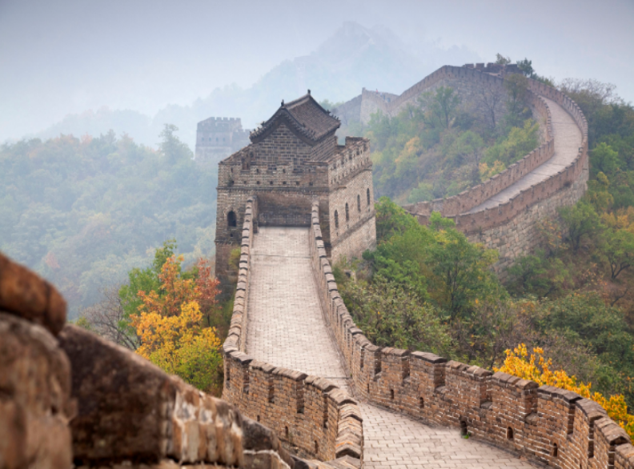

Iconic Landmarks
1. The Great Wall of China
The Great Wall of China was built as early as the 7th century BC.
Its purpose was to keep raiders from entering China. But today, it serves as
A magnificent landmark and dispays as one of the largest man-made strucutres.

2. Temple of Heaven
The Temple of Heaven is a complex of imperial religious buildings situated in the southeastern part of central Beijing.
It was visited by the Emperors of the Ming and Qing dynasties for annual ceremonies of prayer for a good harvest.
It still remains today as a famous tourist attraction.


3. The Terracotta Warriors
The Terracotta Army is part of the world's largest ancient imperial tomb complex, Qin Shi Huang's mausoleum. About 8,000 different life-size statues have been uncovered. It is the eighth wonder of the world. No one who has not seen these terracotta figures can claim to have visited China. Today it as well remains as a very well known site to visit in the modern day.